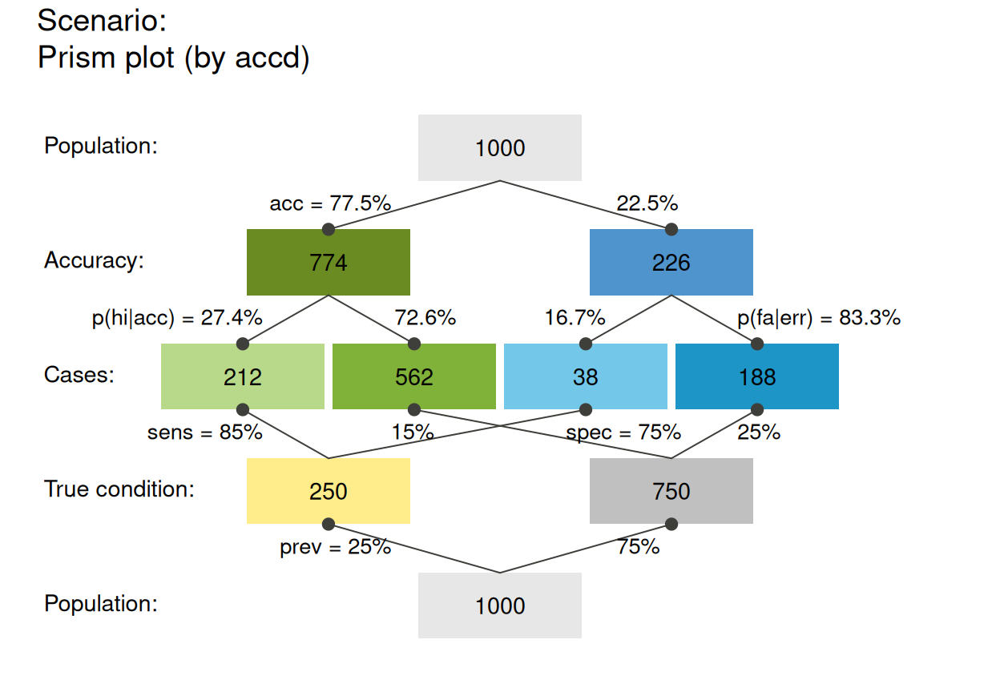
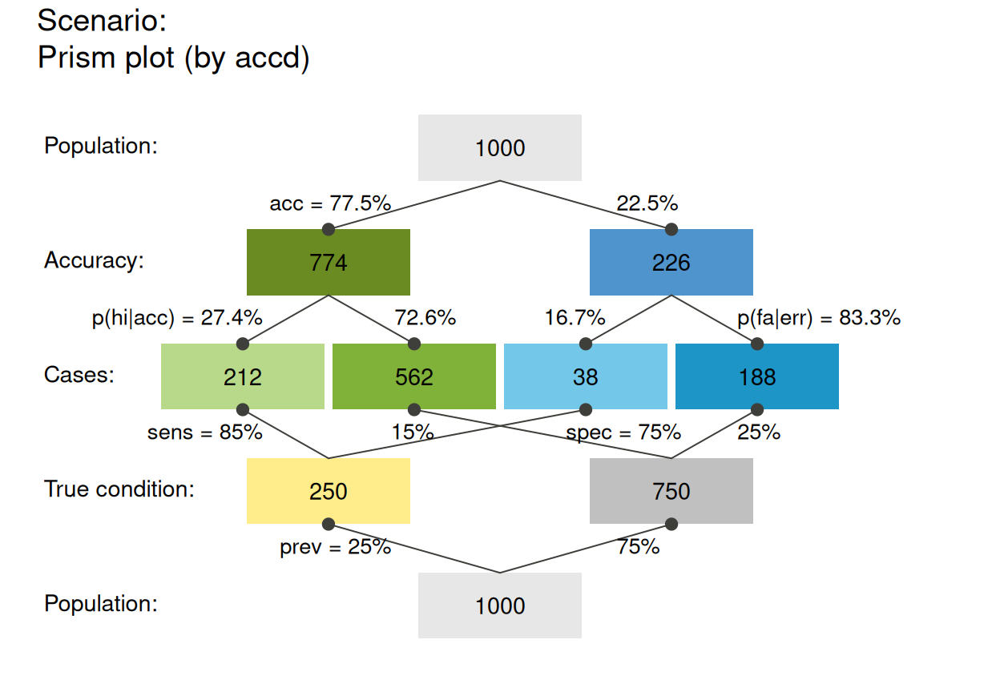

plot_prism plots a network diagram of
from a sufficient and valid set of 3 essential probabilities
(prev, and
sens or its complement mirt, and
spec or its complement fart)
or existing frequency information freq
and a population size of N individuals.
plot_prism(
prev = num$prev,
sens = num$sens,
mirt = NA,
spec = num$spec,
fart = NA,
N = num$N,
by = "cddc",
area = "no",
scale = "p",
round = TRUE,
sample = FALSE,
f_lbl = "num",
f_lbl_sep = NA,
f_lwd = 0,
p_lwd = 1,
p_scale = FALSE,
p_lbl = "mix",
arr_c = NA,
lbl_txt = txt,
main = txt$scen_lbl,
sub = "type",
title_lbl = NULL,
cex_lbl = 0.9,
cex_p_lbl = NA,
col_pal = pal,
mar_notes = FALSE,
...
)Arguments
- prev
The condition's prevalence
prev(i.e., the probability of condition beingTRUE).- sens
The decision's sensitivity
sens(i.e., the conditional probability of a positive decision provided that the condition isTRUE).sensis optional when its complementmirtis provided.- mirt
The decision's miss rate
mirt(i.e., the conditional probability of a negative decision provided that the condition isTRUE).mirtis optional when its complementsensis provided.- spec
The decision's specificity value
spec(i.e., the conditional probability of a negative decision provided that the condition isFALSE).specis optional when its complementfartis provided.- fart
The decision's false alarm rate
fart(i.e., the conditional probability of a positive decision provided that the condition isFALSE).fartis optional when its complementspecis provided.- N
The number of individuals in the population. A suitable value of
Nis computed, if not provided. Note that a population sizeNis not needed for computing current probability informationprob, but is needed for computing frequency informationfreqfrom current probabilitiesprob.- by
A character code specifying 1 or 2 perspective(s) that split(s) the population into 2 subsets. Specifying 1 perspective plots a frequency tree (single tree) with 3 options:
"cd": by condition only;"dc": by decision only;"ac": by accuracy only.
Specifying 2 perspectives plots a frequency prism (double tree) with 6 options:
"cddc": by condition (cd) and by decision (dc) (default);"cdac": by condition (cd) and by accuracy (ac);"dccd": by decision (dc) and by condition (cd);"dcac": by decision (dc) and by accuracy (ac);"accd": by accuracy (ac) and by condition (cd);"acdc": by accuracy (ac) and by decision (dc).
- area
A character code specifying the shapes of the frequency boxes, with 3 options:
"no": rectangular frequency boxes, not scaled (default);"hr": frequency boxes are horizontal rectangles (scaled relative to N)."sq": frequency boxes are squares (scaled relative to N).
- scale
Scale probabilities and corresponding node dimensions either by exact probability or by (rounded or non-rounded) frequency, with 2 options:
"p": scale node dimensions by exact probability (default);"f": re-compute probabilities from (rounded or non-rounded) frequencies and scale node dimensions by their frequency.
Note:
scalesetting matters for the display of probability values and for area plots with small population sizesNwhenround = TRUE.- round
Boolean option specifying whether computed frequencies are rounded to integers. Default:
round = TRUE.- sample
Boolean value that determines whether frequency values are sampled from
N, given the probability values ofprev,sens, andspec. Default:sample = FALSE.- f_lbl
Type of label for showing frequency values in nodes, with 6 options:
"def": abbreviated names and frequency values;"abb": abbreviated frequency names only (as specified in code);"nam": names only (as specified inlbl_txt = txt);"num": numeric frequency values only (default);"namnum": names (as specified inlbl_txt = txt) and numeric values;"no": no frequency labels (same forf_lbl = NAorNULL).
- f_lbl_sep
Separator for frequency labels (used for
f_lbl = "def" OR "namnum"). Usef_lbl_sep = ":\n"to add a line break between name and numeric value. Default:f_lbl_sep = NA(set to" = "or":\n"based onf_lbl).- f_lwd
Line width of areas. Default:
f_lwd = 0.- p_lwd
Line width of probability links. Default:
p_lwd = 1, but consider increasing when settingp_scale = TRUE.- p_scale
Boolean option for scaling current widths of probability links (as set by
p_lwd) by the current probability values. Default:p_scale = FALSE.- p_lbl
Type of label for showing 3 key probability links and values, with many options:
"abb": show links and abbreviated probability names;"def": show links and abbreviated probability names and values;"min": show links and minimum (prominent) probability names;"mix": show links and prominent probability names and all values (default);"nam": show links and probability names (as specified in code);"num": show links and numeric probability values;"namnum": show links with names and numeric probability values;"no": show links with no labels (same forp_lbl = NAorNULL).
- arr_c
Arrow code for symbols at ends of probability links (as a numeric value
-3 <= arr_c <= +6), with the following options:-1to-3: points at one/other/both end/s;0: no symbols;+1to+3: V-arrow at one/other/both end/s;+4to+6: T-arrow at one/other/both end/s.
Default:
arr_c = NA, but adjusted byarea.- lbl_txt
Default label set for text elements. Default:
lbl_txt = txt.- main
Text label for main plot title. Default:
main = txt$scen_lbl.- sub
Text label for plot subtitle (on 2nd line). Default:
sub = "type"shows information on current plot type.- title_lbl
Deprecated text label for current plot title. Replaced by
main.- cex_lbl
Scaling factor for text labels (frequencies and headers). Default:
cex_lbl = .90.- cex_p_lbl
Scaling factor for text labels (probabilities). Default:
cex_p_lbl = cex_lbl - .05.- col_pal
Color palette. Default:
col_pal = pal.- mar_notes
Boolean option for showing margin notes. Default:
mar_notes = FALSE.- ...
Other (graphical) parameters.
Value
Nothing (NULL).
Details
plot_prism generalizes and replaces plot_fnet
by removing the dependency on the R package diagram
and providing many additional options.
See also
plot_fnet for older (obsolete) version;
plot_area for plotting mosaic plot (scaling area dimensions);
plot_bar for plotting frequencies as vertical bars;
plot_tab for plotting table (without scaling area dimensions);
pal contains current color settings;
txt contains current text settings.
Other visualization functions:
plot.riskyr(),
plot_area(),
plot_bar(),
plot_crisk(),
plot_curve(),
plot_fnet(),
plot_icons(),
plot_mosaic(),
plot_plane(),
plot_tab(),
plot_tree()
Examples
## Basics:
# (1) Using global prob and freq values:
plot_prism() # default prism plot,
 # same as:
# plot_prism(by = "cddc", area = "no", scale = "p",
# f_lbl = "num", f_lwd = 0, cex_lbl = .90,
# p_lbl = "mix", arr_c = -2, cex_p_lbl = NA)
# (2) Providing values:
plot_prism(N = 10, prev = 1/3, sens = 3/5, spec = 4/5, area = "hr")
plot_prism(N = 10, prev = 1/4, sens = 3/5, spec = 2/5, area = "sq", mar_notes = TRUE)
# (3) Rounding and sampling:
plot_prism(N = 100, prev = 1/3, sens = 2/3, spec = 6/7, area = "hr", round = FALSE)
plot_prism(N = 100, prev = 1/3, sens = 2/3, spec = 6/7, area = "hr", sample = TRUE, scale = "freq")
# (4) Custom colors and text:
plot_prism(col_pal = pal_bw, f_lwd = .5, p_lwd = .5, lty = 2, # custom fbox color, prob links,
font = 3, cex_p_lbl = .75) # and text labels
my_txt <- init_txt(cond_lbl = "The Truth", cond_true_lbl = "so true", cond_false_lbl = "so false",
hi_lbl = "TP", mi_lbl = "FN", fa_lbl = "FP", cr_lbl = "TN")
my_col <- init_pal(N_col = rgb(0, 169, 224, max = 255), # seeblau
hi_col = "gold", mi_col = "firebrick1", fa_col = "firebrick2", cr_col = "orange")
plot_prism(f_lbl = "nam", lbl_txt = my_txt,
col_pal = my_col, f_lwd = .5)
## Local values and custom color/txt settings:
plot_prism(N = 7, prev = 1/2, sens = 3/5, spec = 4/5, round = FALSE,
by = "cdac", lbl_txt = txt_org, f_lbl = "namnum", f_lbl_sep = ":\n",
f_lwd = 1, col_pal = pal_rgb) # custom colors
plot_prism(N = 5, prev = 1/2, sens = .8, spec = .5, scale = "p", # note scale!
by = "cddc", area = "hr", col_pal = pal_bw, f_lwd = 1) # custom colors
plot_prism(N = 3, prev = .50, sens = .50, spec = .50, scale = "p", # note scale!
area = "sq", lbl_txt = txt_org, f_lbl = "namnum", f_lbl_sep = ":\n", # custom text
col_pal = pal_kn, f_lwd = .5) # custom colors
## Plot versions:
# (A) tree/single tree (nchar(by) == 2):
# 3 versions:
plot_prism(by = "cd", f_lbl = "def", col_pal = pal_mod) # by condition (freq boxes: hi mi fa cr)
plot_prism(by = "dc", f_lbl = "def", col_pal = pal_mod) # by decision (freq boxes: hi fa mi cr)
plot_prism(by = "ac", f_lbl = "def", col_pal = pal_mod) # by accuracy (freq boxes: hi cr mi fa)
# (B) prism/double tree (nchar(by) == 4):
# 6 (3 x 2) versions (+ 3 redundant ones):
plot_prism(by = "cddc") # v01 (default)
# same as:
# plot_prism(by = "cddc", area = "no", scale = "p",
# f_lbl = "num", f_lwd = 0, cex_lbl = .90,
# p_lbl = "mix", arr_c = -2, cex_p_lbl = NA)
# (2) Providing values:
plot_prism(N = 10, prev = 1/3, sens = 3/5, spec = 4/5, area = "hr")
plot_prism(N = 10, prev = 1/4, sens = 3/5, spec = 2/5, area = "sq", mar_notes = TRUE)
# (3) Rounding and sampling:
plot_prism(N = 100, prev = 1/3, sens = 2/3, spec = 6/7, area = "hr", round = FALSE)
plot_prism(N = 100, prev = 1/3, sens = 2/3, spec = 6/7, area = "hr", sample = TRUE, scale = "freq")
# (4) Custom colors and text:
plot_prism(col_pal = pal_bw, f_lwd = .5, p_lwd = .5, lty = 2, # custom fbox color, prob links,
font = 3, cex_p_lbl = .75) # and text labels
my_txt <- init_txt(cond_lbl = "The Truth", cond_true_lbl = "so true", cond_false_lbl = "so false",
hi_lbl = "TP", mi_lbl = "FN", fa_lbl = "FP", cr_lbl = "TN")
my_col <- init_pal(N_col = rgb(0, 169, 224, max = 255), # seeblau
hi_col = "gold", mi_col = "firebrick1", fa_col = "firebrick2", cr_col = "orange")
plot_prism(f_lbl = "nam", lbl_txt = my_txt,
col_pal = my_col, f_lwd = .5)
## Local values and custom color/txt settings:
plot_prism(N = 7, prev = 1/2, sens = 3/5, spec = 4/5, round = FALSE,
by = "cdac", lbl_txt = txt_org, f_lbl = "namnum", f_lbl_sep = ":\n",
f_lwd = 1, col_pal = pal_rgb) # custom colors
plot_prism(N = 5, prev = 1/2, sens = .8, spec = .5, scale = "p", # note scale!
by = "cddc", area = "hr", col_pal = pal_bw, f_lwd = 1) # custom colors
plot_prism(N = 3, prev = .50, sens = .50, spec = .50, scale = "p", # note scale!
area = "sq", lbl_txt = txt_org, f_lbl = "namnum", f_lbl_sep = ":\n", # custom text
col_pal = pal_kn, f_lwd = .5) # custom colors
## Plot versions:
# (A) tree/single tree (nchar(by) == 2):
# 3 versions:
plot_prism(by = "cd", f_lbl = "def", col_pal = pal_mod) # by condition (freq boxes: hi mi fa cr)
plot_prism(by = "dc", f_lbl = "def", col_pal = pal_mod) # by decision (freq boxes: hi fa mi cr)
plot_prism(by = "ac", f_lbl = "def", col_pal = pal_mod) # by accuracy (freq boxes: hi cr mi fa)
# (B) prism/double tree (nchar(by) == 4):
# 6 (3 x 2) versions (+ 3 redundant ones):
plot_prism(by = "cddc") # v01 (default)
 plot_prism(by = "cdac") # v02
# plot_prism(by = "cdcd") # (+) Message
plot_prism(by = "dccd") # v03
plot_prism(by = "dcac") # v04
# plot_prism(by = "dcdc") # (+) Message
plot_prism(by = "accd") # v05

plot_prism(by = "acdc") # v06
# plot_prism(by = "acac") # (+) Message
## Other options:
# area:
# plot_prism(area = "no") # rectangular boxes (default): (same if area = NA/NULL)
plot_prism(area = "hr") # horizontal rectangles (widths on each level sum to N)
plot_prism(area = "sq") # squares (areas on each level sum to N)
# scale (matters for scaled areas and small N):
plot_prism(N = 5, prev = .3, sens = .8, spec = .6,
area = "hr", scale = "p") # widths scaled by prob
plot_prism(N = 5, prev = .3, sens = .8, spec = .6,
area = "hr", scale = "f") # widths scaled by (rounded or non-rounded) freq
plot_prism(N = 4, prev = .2, sens = .7, spec = .8,
area = "sq", scale = "p") # areas scaled by prob
plot_prism(N = 4, prev = .2, sens = .7, spec = .8,
area = "sq", scale = "f") # areas scaled by (rounded or non-rounded) freq
## Frequency boxes:
# f_lbl:
plot_prism(f_lbl = "abb") # abbreviated freq names (variable names)
plot_prism(f_lbl = "nam") # only freq names
plot_prism(by = "cdac") # v02
# plot_prism(by = "cdcd") # (+) Message
plot_prism(by = "dccd") # v03
plot_prism(by = "dcac") # v04
# plot_prism(by = "dcdc") # (+) Message
plot_prism(by = "accd") # v05

plot_prism(by = "acdc") # v06
# plot_prism(by = "acac") # (+) Message
## Other options:
# area:
# plot_prism(area = "no") # rectangular boxes (default): (same if area = NA/NULL)
plot_prism(area = "hr") # horizontal rectangles (widths on each level sum to N)
plot_prism(area = "sq") # squares (areas on each level sum to N)
# scale (matters for scaled areas and small N):
plot_prism(N = 5, prev = .3, sens = .8, spec = .6,
area = "hr", scale = "p") # widths scaled by prob
plot_prism(N = 5, prev = .3, sens = .8, spec = .6,
area = "hr", scale = "f") # widths scaled by (rounded or non-rounded) freq
plot_prism(N = 4, prev = .2, sens = .7, spec = .8,
area = "sq", scale = "p") # areas scaled by prob
plot_prism(N = 4, prev = .2, sens = .7, spec = .8,
area = "sq", scale = "f") # areas scaled by (rounded or non-rounded) freq
## Frequency boxes:
# f_lbl:
plot_prism(f_lbl = "abb") # abbreviated freq names (variable names)
plot_prism(f_lbl = "nam") # only freq names
 plot_prism(f_lbl = "num") # only numeric freq values (default)
plot_prism(f_lbl = "namnum") # names and numeric freq values
# plot_prism(f_lbl = "namnum", cex_lbl = .75) # smaller freq labels
# plot_prism(f_lbl = NA) # no freq labels
# plot_prism(f_lbl = "def") # informative default: short name and numeric value (abb = num)
# f_lwd:
# plot_prism(f_lwd = 0) # no lines (default), set to tiny_lwd = .001, lty = 0 (same if NA/NULL)
plot_prism(f_lwd = 1) # basic lines
plot_prism(f_lbl = "num") # only numeric freq values (default)
plot_prism(f_lbl = "namnum") # names and numeric freq values
# plot_prism(f_lbl = "namnum", cex_lbl = .75) # smaller freq labels
# plot_prism(f_lbl = NA) # no freq labels
# plot_prism(f_lbl = "def") # informative default: short name and numeric value (abb = num)
# f_lwd:
# plot_prism(f_lwd = 0) # no lines (default), set to tiny_lwd = .001, lty = 0 (same if NA/NULL)
plot_prism(f_lwd = 1) # basic lines
 plot_prism(f_lwd = 3) # thicker lines
# plot_prism(f_lwd = .5) # thinner lines
## Probability links:
# Scale link widths (p_lwd & p_scale):
plot_prism(p_lwd = 6, p_scale = TRUE)
plot_prism(area = "sq", f_lbl = "num", p_lbl = NA, col_pal = pal_bw, p_lwd = 6, p_scale = TRUE)
# p_lbl:
plot_prism(p_lbl = "mix") # abbreviated names with numeric values (abb = num)
plot_prism(f_lwd = 3) # thicker lines
# plot_prism(f_lwd = .5) # thinner lines
## Probability links:
# Scale link widths (p_lwd & p_scale):
plot_prism(p_lwd = 6, p_scale = TRUE)
plot_prism(area = "sq", f_lbl = "num", p_lbl = NA, col_pal = pal_bw, p_lwd = 6, p_scale = TRUE)
# p_lbl:
plot_prism(p_lbl = "mix") # abbreviated names with numeric values (abb = num)
 plot_prism(p_lbl = "min") # minimal names (of key probabilities)
# plot_prism(p_lbl = NA) # no prob labels (NA/NULL/"none")
plot_prism(p_lbl = "nam") # only prob names
plot_prism(p_lbl = "num") # only numeric prob values
plot_prism(p_lbl = "namnum") # names and numeric prob values
# plot_prism(p_lbl = "namnum", cex_p_lbl = .70) # smaller prob labels
# plot_prism(by = "cddc", p_lbl = "min") # minimal labels
# plot_prism(by = "cdac", p_lbl = "min")
# plot_prism(by = "cddc", p_lbl = "mix") # mix abbreviated names and numeric values
# plot_prism(by = "cdac", p_lbl = "mix")
# plot_prism(by = "cddc", p_lbl = "abb") # abbreviated names
# plot_prism(by = "cdac", p_lbl = "abb")
# plot_prism(p_lbl = "any") # short name and value (abb = num)
# arr_c:
plot_prism(arr_c = 0) # acc_c = 0: no arrows
plot_prism(arr_c = -3) # arr_c = -1 to -3: points at both ends
plot_prism(arr_c = -2) # point at far end
plot_prism(p_lbl = "min") # minimal names (of key probabilities)
# plot_prism(p_lbl = NA) # no prob labels (NA/NULL/"none")
plot_prism(p_lbl = "nam") # only prob names
plot_prism(p_lbl = "num") # only numeric prob values
plot_prism(p_lbl = "namnum") # names and numeric prob values
# plot_prism(p_lbl = "namnum", cex_p_lbl = .70) # smaller prob labels
# plot_prism(by = "cddc", p_lbl = "min") # minimal labels
# plot_prism(by = "cdac", p_lbl = "min")
# plot_prism(by = "cddc", p_lbl = "mix") # mix abbreviated names and numeric values
# plot_prism(by = "cdac", p_lbl = "mix")
# plot_prism(by = "cddc", p_lbl = "abb") # abbreviated names
# plot_prism(by = "cdac", p_lbl = "abb")
# plot_prism(p_lbl = "any") # short name and value (abb = num)
# arr_c:
plot_prism(arr_c = 0) # acc_c = 0: no arrows
plot_prism(arr_c = -3) # arr_c = -1 to -3: points at both ends
plot_prism(arr_c = -2) # point at far end
 plot_prism(arr_c = +2) # crr_c = 1-3: V-shape arrows at far end
# plot_prism(arr_c = +3) # V-shape arrows at both ends
# plot_prism(arr_c = +6) # arr_c = 4-6: T-shape arrows
## Plain plot versions:
plot_prism(area = "no", f_lbl = "def", p_lbl = "num", col_pal = pal_mod, f_lwd = 1,
main = NA, sub = NA, mar_notes = FALSE) # remove titles and margin notes
plot_prism(area = "no", f_lbl = "nam", p_lbl = "min",
main = NA, sub = "My subtitle", col_pal = pal_rgb) # only subtitle
plot_prism(area = "no", f_lbl = "num", p_lbl = "num", col_pal = pal_kn) # default title & subtitle
plot_prism(area = "hr", f_lbl = "nam", f_lwd = .5, p_lwd = .5, col_pal = pal_bwp)
plot_prism(area = "hr", f_lbl = "nam", f_lwd = .5, p_lbl = "num", main = NA, sub = NA)
# plot_prism(area = "sq", f_lbl = "nam", p_lbl = NA, col_pal = pal_rgb)
plot_prism(area = "sq", f_lbl = "def", f_lbl_sep = ":\n", p_lbl = NA, f_lwd = 1, col_pal = pal_kn)
plot_prism(arr_c = +2) # crr_c = 1-3: V-shape arrows at far end
# plot_prism(arr_c = +3) # V-shape arrows at both ends
# plot_prism(arr_c = +6) # arr_c = 4-6: T-shape arrows
## Plain plot versions:
plot_prism(area = "no", f_lbl = "def", p_lbl = "num", col_pal = pal_mod, f_lwd = 1,
main = NA, sub = NA, mar_notes = FALSE) # remove titles and margin notes
plot_prism(area = "no", f_lbl = "nam", p_lbl = "min",
main = NA, sub = "My subtitle", col_pal = pal_rgb) # only subtitle
plot_prism(area = "no", f_lbl = "num", p_lbl = "num", col_pal = pal_kn) # default title & subtitle
plot_prism(area = "hr", f_lbl = "nam", f_lwd = .5, p_lwd = .5, col_pal = pal_bwp)
plot_prism(area = "hr", f_lbl = "nam", f_lwd = .5, p_lbl = "num", main = NA, sub = NA)
# plot_prism(area = "sq", f_lbl = "nam", p_lbl = NA, col_pal = pal_rgb)
plot_prism(area = "sq", f_lbl = "def", f_lbl_sep = ":\n", p_lbl = NA, f_lwd = 1, col_pal = pal_kn)
 ## Suggested combinations:
plot_prism(f_lbl = "nam", p_lbl = "mix", col_pal = pal_mod) # basic plot
## Suggested combinations:
plot_prism(f_lbl = "nam", p_lbl = "mix", col_pal = pal_mod) # basic plot
 plot_prism(f_lbl = "namnum", p_lbl = "num", cex_lbl = .80, cex_p_lbl = .75)
# plot_prism(area = "no", f_lbl = "def", p_lbl = "abb", # def/abb labels
# f_lwd = .8, p_lwd = .8, lty = 3, col_pal = pal_bwp) # black-&-white
plot_prism(area = "hr", f_lbl = "num", p_lbl = "mix", f_lwd = 1, cex_p_lbl = .75)
plot_prism(area = "hr", f_lbl = "nam", p_lbl = "num", p_lwd = 6, p_scale = TRUE)
plot_prism(area = "hr", f_lbl = "abb", p_lbl = "abb", f_lwd = 1, col_pal = pal_kn)
# plot_prism(area = "sq", f_lbl = "nam", p_lbl = "abb", lbl_txt = txt_TF)
plot_prism(area = "sq", f_lbl = "num", p_lbl = "num", f_lwd = 1, col_pal = pal_rgb)
plot_prism(area = "sq", f_lbl = "namnum", p_lbl = "mix", f_lwd = .5, col_pal = pal_kn)
plot_prism(f_lbl = "namnum", p_lbl = "num", cex_lbl = .80, cex_p_lbl = .75)
# plot_prism(area = "no", f_lbl = "def", p_lbl = "abb", # def/abb labels
# f_lwd = .8, p_lwd = .8, lty = 3, col_pal = pal_bwp) # black-&-white
plot_prism(area = "hr", f_lbl = "num", p_lbl = "mix", f_lwd = 1, cex_p_lbl = .75)
plot_prism(area = "hr", f_lbl = "nam", p_lbl = "num", p_lwd = 6, p_scale = TRUE)
plot_prism(area = "hr", f_lbl = "abb", p_lbl = "abb", f_lwd = 1, col_pal = pal_kn)
# plot_prism(area = "sq", f_lbl = "nam", p_lbl = "abb", lbl_txt = txt_TF)
plot_prism(area = "sq", f_lbl = "num", p_lbl = "num", f_lwd = 1, col_pal = pal_rgb)
plot_prism(area = "sq", f_lbl = "namnum", p_lbl = "mix", f_lwd = .5, col_pal = pal_kn)